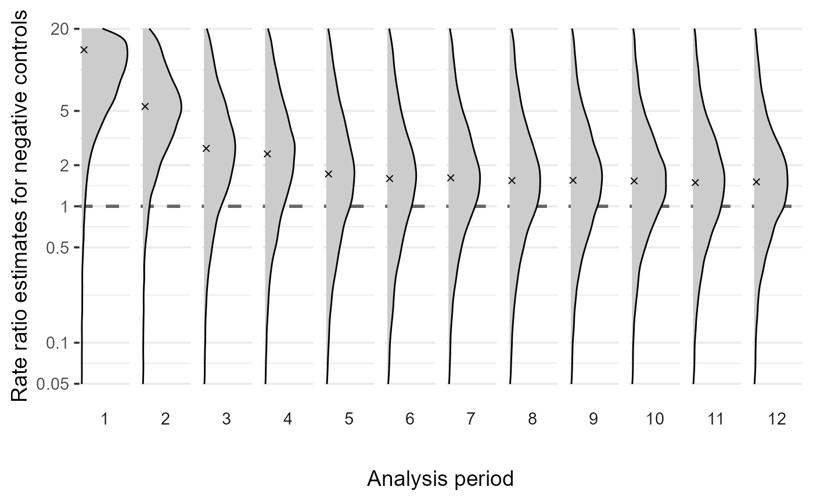
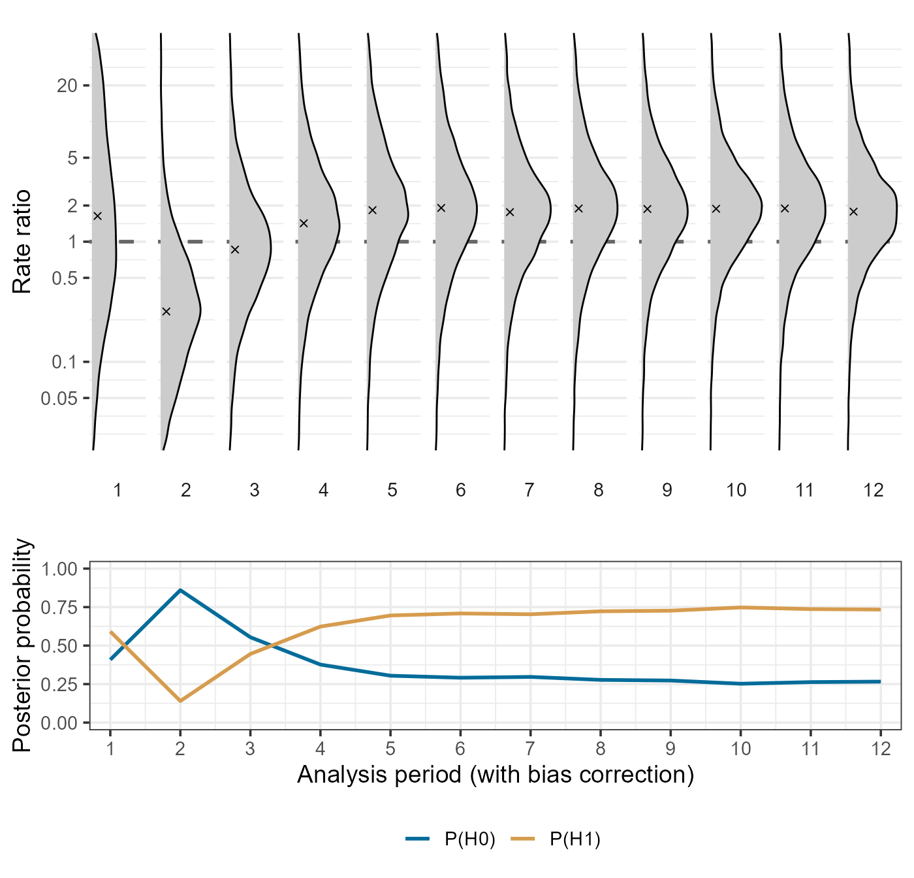

Bayesian adaptive bias correction using profile likelihoods
Example code using the
EvidenceSynthesis package
Fan Bu
2023-04-26
Source:vignettes/BayesianBiasCorrection.Rmd
BayesianBiasCorrection.RmdIntroduction
We demonstrate Bayesian adaptive bias correction in the context of vaccine safety surveillance using an example dataset. Safety surveillance is a post-approval procedure that monitors vaccine products for adverse events, particularly rare and potentially severe outcomes that may have been undetected in pre-approval clinical trials. It relies on sequential analysis of real-world observational healthcare databases. Therefore, we need to address the challenge of sequential multiple testing as well as residual and unmeasured confounding in observational data.
In EvidenceSynthesis, we have implemented methods of
Bayesian adaptive bias correction that can handle sequential analysis
and correct for estimation bias induced by the residual confounding in
observational health data sources. We perform Bayesian bias correction
by jointly modeling the vaccine effect on the adverse event of interest
and learning empirical bias distributions using a Bayesian hierarchical
modeling approach. The empirical bias distribution arises from
simultaneously analyzing a large set of negative control outcomes, which
are known to be not associated with the vaccine of interest. Then, using
Markov chain Monte Carlo (MCMC), we can obtain the posterior
distribution for the de-biased effect size (in terms of the incidence
rate ratio, RR) of the vaccine on the outcome of interest.
To accommodate a federated data network setting where patient-level information has to be protected but summary-level information is allowed to be shared, we extract from each data site profile likelihoods regarding the main effect of interest. For each particular pair of vaccine exposure and adverse event outcome, and for each epidemiological design, let \(\mathcal{L}(\beta, \gamma; \mathbf{x})\) denote the likelihood function. Here, \(\beta\) is the log RR, the main effect size of interest; \(\gamma\) represents nuisance parameters; \(\mathbf{x}\) indicates the data. We profile the multivariate likelihood function and approximate it with a 1d function as follows: \[ \tilde{\mathcal{L}}(\beta; \mathbf{x}) := \max_{\gamma}\mathcal{L}(\beta, \gamma; \mathbf{x}). \] Then we save the function values evaluated at \(\beta\) values on an adaptively chosen grid. At each analysis time \(t\), for a specific vaccine exposure and under a particular design, we would extract a profile likelihood for each negative control outcome and each outcome of interest.
In this vignette, we will go through two key components of bias correction:
- Learn empirical bias distributions by simultaneously analyzing a large set of negative control outcomes, adaptively in time.
- Perform bias correction to analyze a synthesized outcome of interest.
We provide two example data objects, ncLikelihoods and
ooiLikelihoods, that contain example profile likelihoods
for a large set of negative control outcomes and for a synthetic
outcome, respectively. They are extracted from a real-world
observational healthcare database, and can be loaded by the commands
data("ncLikelihoods") and
data("ooiLikelihoods"). Each profile likelihood takes the
form of a two-column dataframe, where point includes grid
points for \(\beta\) and
value includes the corresponding profile likelihood
values.
For example, we can check out the profile likelihood for one of the negative control outcomes at the 1st analysis period:
library(EvidenceSynthesis)
data("ncLikelihoods")
data("ooiLikelihoods")
knitr::kable(ncLikelihoods[[1]][[1]])| point | value |
|---|---|
| -2.30259 | -6.90979 |
| -1.79090 | -6.39877 |
| -1.27921 | -5.88820 |
| -0.76753 | -5.37837 |
| -0.25584 | -4.86978 |
| 0.25584 | -4.36326 |
| 0.76753 | -3.86020 |
| 1.27921 | -3.36289 |
| 1.79090 | -2.87519 |
| 2.30259 | -2.40352 |
Learning bias distributions from negative control outcomes
At time \(t\), given the profile
likelihoods regarding the negative control outcomes, we can learn an
empirical bias distribution by fitting a hierarchical Bayesian model,
using the computeBayesianMetaAnalysis function.
We assume that the estimation biases associated with the negative control outcomes are exchangeable and center around an ``average’’ bias \(\bar{b}\) with variability measured by a scale parameter \(\tau\).
We have implemented a hierarchical normal model and a hierarchical \(t\)-model for the bias distribution, with the normal model as default, and carry out Bayesian posterior inference through a random walk Markov chain Monte Carlo (MCMC).
For instance, to learn the bias distribution at the 1st period using
the example dataset, we can call the
fitBiasDistribution:
singleBiasDist <- fitBiasDistribution(ncLikelihoods[[1]],
seed = 42
)The default setting would fit a hierarchical normal model. To fit a
more robust distribution that can better handle heavy tails and
outliers, we can set robust = TRUE:
singleBiasDistRobust <- fitBiasDistribution(ncLikelihoods[[1]],
robust = TRUE,
seed = 42
)To learn the bias distribution over multiple analyses, in the setting
of either sequential analysis or group analysis, we can call the
sequentialFitBiasDistribution function. For example, to
adaptively learn all empirical bias distributions across all \(12\) analysis periods in the example data,
under the \(t\) model:
BiasDistRobust <- sequentialFitBiasDistribution(ncLikelihoods,
robust = TRUE,
seed = 1
)We can visualize the learned bias distributions over time using the
plotBiasDistribution function:
plotBiasDistribution(BiasDistRobust, limits = c(-3, 3))
Perform Bayesian adaptive bias correction
Now we demonstrate how to perform Bayesian adaptive bias correction for sequential analysis. At each analysis time \(t\), we use the learned empirical bias distribution by analyzing negative controls observed up to time \(t\) to de-bias our analysis regarding the outcome of interest. We can do this either for time \(t\) only, or for all analysis timepoints \(t = 1, 2, \ldots, T_{\max}\).
We provide implementation in the function
biasCorrectionInference. To perform bias correction for the
\(5\)th analysis, for example:
# select profile likelihoods for the 5th analysis period
ooiLik5 <- list(ooiLikelihoods[["5"]])
ncLik5 <- list(ncLikelihoods[["5"]])
# specify prior mean and prior standard deviation for the effect size (log RR)
bbcResult5 <- biasCorrectionInference(ooiLik5,
ncLikelihoodProfiles = ncLik5,
priorMean = 0,
priorSd = 4,
doCorrection = TRUE,
seed = 42
)We note that the input should include (1) profile likelihoods on the
outcome of interest on the negative controls (e.g.,
ooiLik5), and (2) profile likelihoods (e.g.,
ncLik5) or the learned bias distributions. The likelihoods
must be provided as a list, where each entry contains the profile
likelihood(s) from one analysis period or group. Therefore, if only one
period or group of data needs to be analyzed, then the profile
likelihoods must be supplied as a list of length \(1\).
If the bias distribution is already available or has been learned
separately, then we can also specify it in the
biasDistributions argument. This can be more convenient and
efficient if there are more than one outcomes of interest to analyze, as
the learned bias distributions can then be re-used. For example:
# learn bias distribution for the 5th analysis period first
biasDist5 <- fitBiasDistribution(ncLikelihoods[["5"]])
# then recycle the bias distribution
bbcResult5 <- biasCorrectionInference(ooiLik5,
biasDistributions = biasDist5,
priorMean = 0,
priorSd = 4,
doCorrection = TRUE,
seed = 42
)The main output is a summary table of the analysis results, including
posterior median and mean (columns median and
mean), the 95% credible interval (columns
ci95Lb and ci95Ub), and the posterior
probability that there is a positive effect (in column p1).
Estimates without bias correction can be accessed in the
summaryRaw attribute, and so we can compare the results
with and without bias correction.
library(dplyr)
knitr::kable(bind_rows(
bbcResult5 %>% mutate(biasCorrection = "yes"),
attr(bbcResult5, "summaryRaw") %>%
mutate(biasCorrection = "no")
) %>%
select(-Id), digits = 4)| median | mean | ci95Lb | ci95Ub | p1 | biasCorrection |
|---|---|---|---|---|---|
| 0.5935 | 0.5939 | -0.8838 | 2.0502 | 0.7949 | yes |
| 1.1588 | 1.1551 | 0.9043 | 1.3981 | 1.0000 | no |
To perform sequential analysis with adaptive bias correction over
time, we should supply profile likelihoods across all analysis
periods/groups in the input. For example, if we use the already learned
bias distributions BiasDistRobust:
bbcSequential <- biasCorrectionInference(ooiLikelihoods,
biasDistributions = BiasDistRobust,
priorMean = 0,
priorSd = 4,
doCorrection = TRUE,
seed = 42
)We can then check out the sequential analysis results:
| period | median | mean | ci95Lb | ci95Ub | p1 |
|---|---|---|---|---|---|
| 1 | 0.4875 | 0.7422 | -3.5436 | 5.8970 | 0.5856 |
| 2 | -1.3418 | -1.3949 | -4.3864 | 1.5127 | 0.1428 |
| 3 | -0.1727 | -0.1850 | -3.0050 | 2.7624 | 0.4346 |
| 4 | 0.3537 | 0.3656 | -2.6551 | 3.4021 | 0.6258 |
| 5 | 0.6284 | 0.6229 | -2.4261 | 3.9465 | 0.7042 |
| 6 | 0.6528 | 0.6457 | -2.4722 | 3.9950 | 0.7099 |
| 7 | 0.5284 | 0.5207 | -2.3062 | 3.4768 | 0.6894 |
| 8 | 0.6556 | 0.6423 | -2.2494 | 3.4861 | 0.7305 |
| 9 | 0.6126 | 0.6111 | -2.1726 | 3.5031 | 0.7179 |
| 10 | 0.6316 | 0.6464 | -2.1094 | 3.3503 | 0.7420 |
| 11 | 0.6685 | 0.6763 | -1.8358 | 3.6872 | 0.7465 |
| 12 | 0.5929 | 0.5964 | -1.8419 | 3.1823 | 0.7377 |
The plotBiasCorrectionInference function provides some
simple plotting functionality to visualize the analysis results. For
example, we can visualize the posterior distributions of the bias
corrected log RR across analysis periods, along with posterior
probabilities for a positive effect size (P(H1)) or a
non-positive effect size (P(H0)):
plotBiasCorrectionInference(bbcSequential,
type = "corrected",
limits = c(-4, 4)
)
Meanwhile, we can also compare the estimates with and without bias
correction. It is also possible to only examine certain analysis
periods/groups by specifying the ids argument.
plotBiasCorrectionInference(bbcSequential,
type = "compare",
limits = c(-4, 4),
ids = as.character(3:12)
)